The LAPACK Interface¶
The module cvxopt.lapack includes functions for solving dense sets of linear equations, for the corresponding matrix factorizations (LU, Cholesky, LDLT), for solving least-squares and least-norm problems, for QR factorization, for symmetric eigenvalue problems, singular value decomposition, and Schur factorization.
In this chapter we briefly describe the Python calling sequences. For further details on the underlying LAPACK functions we refer to the LAPACK Users’ Guide and manual pages.
The BLAS conventional storage scheme of the section Matrix Classes is used. As in the previous chapter, we omit from the function definitions less important arguments that are useful for selecting submatrices. The complete definitions are documented in the docstrings in the source code.
General Linear Equations¶
- cvxopt.lapack.gesv(A, B[, ipiv = None])¶
Solves

where
 and
and  are real or complex matrices, with
square and nonsingular.
are real or complex matrices, with
square and nonsingular.The arguments A and B must have the same type ('d' or 'z'). On entry, B contains the right-hand side
; on exit it contains the solution 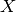. The optional
argument ipiv is an integer matrix of length at least  .
If ipiv is provided, then gesv solves the system, replaces
A with the triangular factors in an LU factorization, and returns
the permutation matrix in ipiv. If ipiv is not specified,
then gesv solves the system but does not return the LU
factorization and does not modify A.
.
If ipiv is provided, then gesv solves the system, replaces
A with the triangular factors in an LU factorization, and returns
the permutation matrix in ipiv. If ipiv is not specified,
then gesv solves the system but does not return the LU
factorization and does not modify A.Raises an ArithmeticError if the matrix is singular.
- cvxopt.lapack.getrf(A, ipiv)¶
LU factorization of a general, possibly rectangular, real or complex matrix,
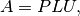
where
is  by .
by .The argument ipiv is an integer matrix of length at least min{
, }. On exit, the lower triangular part of
A is replaced by  , the upper triangular part by
, the upper triangular part by  ,
and the permutation matrix is returned in ipiv.
,
and the permutation matrix is returned in ipiv.Raises an ArithmeticError if the matrix is not full rank.
- cvxopt.lapack.getrs(A, ipiv, B[, trans = 'N'])¶
Solves a general set of linear equations

given the LU factorization computed by gesv or getrf.
On entry, A and ipiv must contain the factorization as computed by gesv or getrf. On entry, B contains the right-hand side
; on exit it contains the solution .
B must have the same type as A.
- cvxopt.lapack.getri(A, ipiv)¶
Computes the inverse of a matrix.
On entry, A and ipiv must contain the factorization as computed by gesv or getrf. On exit, A contains the matrix inverse.
In the following example we compute
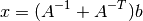
for randomly generated problem data, factoring the coefficient matrix once.
>>> from cvxopt import matrix, normal
>>> from cvxopt.lapack import gesv, getrs
>>> n = 10
>>> A = normal(n,n)
>>> b = normal(n)
>>> ipiv = matrix(0, (n,1))
>>> x = +b
>>> gesv(A, x, ipiv) # x = A^{-1}*b
>>> x2 = +b
>>> getrs(A, ipiv, x2, trans='T') # x2 = A^{-T}*b
>>> x += x2
Separate functions are provided for equations with band matrices.
- cvxopt.lapack.gbsv(A, kl, B[, ipiv = None])¶
Solves
where
and are real or complex matrices, with
by and banded with 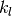
subdiagonals.The arguments A and B must have the same type ('d' or 'z'). On entry, B contains the right-hand side
; on exit it contains the solution . The optional
argument ipiv is an integer matrix of length at least .
If ipiv is provided, then A must have  rows. On entry the diagonals of are stored in rows
rows. On entry the diagonals of are stored in rows
 to of A, using the BLAS
format for general band matrices (see the section
Matrix Classes). On exit, the factorization is returned in
A and ipiv. If ipiv is not provided, then A must have
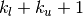 rows. On entry the diagonals of are
stored in the rows of A, following the standard BLAS format for
general band matrices. In this case, gbsv does not modify
A and does not return the factorization.
to of A, using the BLAS
format for general band matrices (see the section
Matrix Classes). On exit, the factorization is returned in
A and ipiv. If ipiv is not provided, then A must have
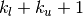 rows. On entry the diagonals of are
stored in the rows of A, following the standard BLAS format for
general band matrices. In this case, gbsv does not modify
A and does not return the factorization.Raises an ArithmeticError if the matrix is singular.
- cvxopt.lapack.gbtrf(A, m, kl, ipiv)¶
LU factorization of a general
by real or complex
band matrix with subdiagonals.The matrix is stored using the BLAS format for general band matrices (see the section Matrix Classes), by providing the diagonals (stored as rows of a 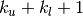 by
matrix A),
the number of rows , and the number of subdiagonals
. The argument ipiv is an integer matrix of length at
least min{, }. On exit, A and ipiv contain
the details of the factorization.Raises an ArithmeticError if the matrix is not full rank.
- cvxopt.lapack.gbtrs({A, kl, ipiv, B[, trans = 'N'])¶
Solves a set of linear equations

with
a general band matrix with subdiagonals,
given the LU factorization computed by
gbsv or
gbtrf.On entry, A and ipiv must contain the factorization as computed by gbsv or gbtrf. On entry, B contains the right-hand side
; on exit it contains the solution .
B must have the same type as A.
As an example, we solve a linear equation with
![A = \left[ \begin{array}{cccc}
1 & 2 & 0 & 0 \\
3 & 4 & 5 & 0 \\
6 & 7 & 8 & 9 \\
0 & 10 & 11 & 12
\end{array}\right], \qquad
B = \left[\begin{array}{c} 1 \\ 1 \\ 1 \\ 1 \end{array}\right].](_images/math/088678597f59c16fea047bea9d1975beb919da52.png)
>>> from cvxopt import matrix
>>> from cvxopt.lapack import gbsv, gbtrf, gbtrs
>>> n, kl, ku = 4, 2, 1
>>> A = matrix([[0., 1., 3., 6.], [2., 4., 7., 10.], [5., 8., 11., 0.], [9., 12., 0., 0.]])
>>> x = matrix(1.0, (n,1))
>>> gbsv(A, kl, x)
>>> print(x)
[ 7.14e-02]
[ 4.64e-01]
[-2.14e-01]
[-1.07e-01]
The code below illustrates how one can reuse the factorization returned by gbsv.
>>> Ac = matrix(0.0, (2*kl+ku+1,n))
>>> Ac[kl:,:] = A
>>> ipiv = matrix(0, (n,1))
>>> x = matrix(1.0, (n,1))
>>> gbsv(Ac, kl, x, ipiv) # solves A*x = 1
>>> print(x)
[ 7.14e-02]
[ 4.64e-01]
[-2.14e-01]
[-1.07e-01]
>>> x = matrix(1.0, (n,1))
>>> gbtrs(Ac, kl, ipiv, x, trans='T') # solve A^T*x = 1
>>> print(x)
[ 7.14e-02]
[ 2.38e-02]
[ 1.43e-01]
[-2.38e-02]
An alternative method uses gbtrf for the factorization.
>>> Ac[kl:,:] = A
>>> gbtrf(Ac, n, kl, ipiv)
>>> x = matrix(1.0, (n,1))
>>> gbtrs(Ac, kl, ipiv, x) # solve A^T*x = 1
>>> print(x)
[ 7.14e-02]
[ 4.64e-01]
[-2.14e-01]
[-1.07e-01]
>>> x = matrix(1.0, (n,1))
>>> gbtrs(Ac, kl, ipiv, x, trans='T') # solve A^T*x = 1
>>> print(x)
[ 7.14e-02]
[ 2.38e-02]
[ 1.43e-01]
[-2.38e-02]
The following functions can be used for tridiagonal matrices. They use a simpler matrix format, with the diagonals stored in three separate vectors.
- cvxopt.lapack.gtsv(dl, d, du, B))¶
Solves
where
is an by tridiagonal matrix.The subdiagonal of
is stored as a matrix dl of length
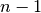, the diagonal is stored as a matrix d of length
, and the superdiagonal is stored as a matrix du of
length . The four arguments must have the same type
('d' or 'z'). On exit dl, d, du are
overwritten with the details of the LU factorization of .
On entry, B contains the right-hand side ; on exit it
contains the solution .Raises an ArithmeticError if the matrix is singular.
- cvxopt.lapack.gttrf(dl, d, du, du2, ipiv)¶
LU factorization of an
by tridiagonal matrix.The subdiagonal of
is stored as a matrix dl of length
, the diagonal is stored as a matrix d of length
, and the superdiagonal is stored as a matrix du of length
. dl, d and du must have the same type.
du2 is a matrix of length  , and of the same type as
dl. ipiv is an 'i' matrix of length .
On exit, the five arguments contain the details of the factorization.
, and of the same type as
dl. ipiv is an 'i' matrix of length .
On exit, the five arguments contain the details of the factorization.Raises an ArithmeticError if the matrix is singular.
- cvxopt.lapack.gttrs(dl, d, du, du2, ipiv, B[, trans = 'N'])¶
Solves a set of linear equations
where
is an by tridiagonal matrix.The arguments dl, d, du, du2, and ipiv contain the details of the LU factorization as returned by gttrf. On entry, B contains the right-hand side
; on exit it
contains the solution . B must have the same type as
the other arguments.
Positive Definite Linear Equations¶
- cvxopt.lapack.posv(A, B[, uplo = 'L'])¶
Solves
where
is a real symmetric or complex Hermitian positive
definite matrix.On exit, B is replaced by the solution, and A is overwritten with the Cholesky factor. The matrices A and B must have the same type ('d' or 'z').
Raises an ArithmeticError if the matrix is not positive definite.
- cvxopt.lapack.potrf(A[, uplo = 'L'])¶
Cholesky factorization

of a positive definite real symmetric or complex Hermitian matrix
.On exit, the lower triangular part of A (if uplo is 'L') or the upper triangular part (if uplo is 'U') is overwritten with the Cholesky factor or its (conjugate) transpose.
Raises an ArithmeticError if the matrix is not positive definite.
- cvxopt.lapack.potrs(A, B[, uplo = 'L'])¶
Solves a set of linear equations

with a positive definite real symmetric or complex Hermitian matrix, given the Cholesky factorization computed by posv or potrf.
On entry, A contains the triangular factor, as computed by posv or potrf. On exit, B is replaced by the solution. B must have the same type as A.
- cvxopt.lapack.potri(A[, uplo = 'L'])¶
Computes the inverse of a positive definite matrix.
On entry, A contains the Cholesky factorization computed by potrf or posv. On exit, it contains the matrix inverse.
As an example, we use posv to solve the linear system
(1)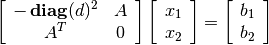
by block-elimination. We first pick a random problem.
>>> from cvxopt import matrix, div, normal, uniform
>>> from cvxopt.blas import syrk, gemv
>>> from cvxopt.lapack import posv
>>> m, n = 100, 50
>>> A = normal(m,n)
>>> b1, b2 = normal(m), normal(n)
>>> d = uniform(m)
We then solve the equations

>>> Asc = div(A, d[:, n*[0]]) # Asc := diag(d)^{-1}*A
>>> B = matrix(0.0, (n,n))
>>> syrk(Asc, B, trans='T') # B := Asc^T * Asc = A^T * diag(d)^{-2} * A
>>> x1 = div(b1, d) # x1 := diag(d)^{-1}*b1
>>> x2 = +b2
>>> gemv(Asc, x1, x2, trans='T', beta=1.0) # x2 := x2 + Asc^T*x1 = b2 + A^T*diag(d)^{-2}*b1
>>> posv(B, x2) # x2 := B^{-1}*x2 = B^{-1}*(b2 + A^T*diag(d)^{-2}*b1)
>>> gemv(Asc, x2, x1, beta=-1.0) # x1 := Asc*x2 - x1 = diag(d)^{-1} * (A*x2 - b1)
>>> x1 = div(x1, d) # x1 := diag(d)^{-1}*x1 = diag(d)^{-2} * (A*x2 - b1)
There are separate routines for equations with positive definite band matrices.
- cvxopt.lapack.pbsv(A, B[, uplo='L'])¶
Solves
where
is a real symmetric or complex Hermitian positive
definite band matrix.On entry, the diagonals of
are stored in A, using the
BLAS format for symmetric or Hermitian band matrices (see
section Matrix Classes). On exit, B is replaced by the
solution, and A is overwritten with the Cholesky factor (in the
BLAS format for triangular band matrices). The matrices A and
B must have the same type ('d' or 'z').Raises an ArithmeticError if the matrix is not positive definite.
- cvxopt.lapack.pbtrf(A[, uplo = 'L'])¶
Cholesky factorization
of a positive definite real symmetric or complex Hermitian band matrix
.On entry, the diagonals of
are stored in A, using the
BLAS format for symmetric or Hermitian band matrices. On exit, A
contains the Cholesky factor, in the BLAS format for triangular band
matrices.Raises an ArithmeticError if the matrix is not positive definite.
- cvxopt.lapack.pbtrs(A, B[, uplo = 'L'])¶
Solves a set of linear equations

with a positive definite real symmetric or complex Hermitian band matrix, given the Cholesky factorization computed by pbsv or pbtrf.
On entry, A contains the triangular factor, as computed by pbsv or pbtrf. On exit, B is replaced by the solution. B must have the same type as A.
The following functions are useful for tridiagonal systems.
- cvxopt.lapack.ptsv(d, e, B)¶
Solves
where
is an by positive definite real
symmetric or complex Hermitian tridiagonal matrix.The diagonal of
is stored as a 'd' matrix d of
length and its subdiagonal as a 'd' or 'z'
matrix e of length . The arguments e and B
must have the same type. On exit d contains the diagonal elements
of  in the
LDLT
or
LDLH
factorization of , and
e contains the subdiagonal elements of the unit lower bidiagonal
matrix . B is overwritten with the solution .
Raises an ArithmeticError if the matrix is singular.
in the
LDLT
or
LDLH
factorization of , and
e contains the subdiagonal elements of the unit lower bidiagonal
matrix . B is overwritten with the solution .
Raises an ArithmeticError if the matrix is singular.
- cvxopt.lapack.pttrf(d, e)¶
LDLT or LDLH factorization of an
by positive
definite real symmetric or complex Hermitian tridiagonal matrix
.On entry, the argument d is a 'd' matrix with the diagonal elements of
. The argument e is 'd' or
'z' matrix containing the subdiagonal of . On exit
d contains the diagonal elements of , and e contains
the subdiagonal elements of the unit lower bidiagonal matrix .Raises an ArithmeticError if the matrix is singular.
- cvxopt.lapack.pttrs(d, e, B[, uplo = 'L'])¶
Solves a set of linear equations
where
is an by positive definite real
symmetric or complex Hermitian tridiagonal matrix, given its
LDLT
or
LDLH
factorization.The argument d is the diagonal of the diagonal matrix
.
The argument uplo only matters for complex matrices. If uplo
is 'L', then on exit e contains the subdiagonal elements
of the unit bidiagonal matrix . If uplo is 'U',
then e contains the complex conjugates of the elements of the unit
bidiagonal matrix . On exit, B is overwritten with the
solution . B must have the same type as e.
Symmetric and Hermitian Linear Equations¶
- cvxopt.lapack.sysv(A, B[, ipiv = None, uplo = 'L'])¶
Solves
where
is a real or complex symmetric matrix of order
.On exit, B is replaced by the solution. The matrices A and B must have the same type ('d' or 'z'). The optional argument ipiv is an integer matrix of length at least equal to
. If ipiv is provided, sysv solves the
system and returns the factorization in A and ipiv. If
ipiv is not specified, sysv solves the system but does not
return the factorization and does not modify A.Raises an ArithmeticError if the matrix is singular.
- cvxopt.lapack.sytrf(A, ipiv[, uplo = 'L'])¶
LDLT factorization
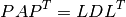
of a real or complex symmetric matrix
of order .ipiv is an 'i' matrix of length at least
. On
exit, A and ipiv contain the factorization.Raises an ArithmeticError if the matrix is singular.
- cvxopt.lapack.sytrs(A, ipiv, B[, uplo = 'L'])¶
Solves

given the LDLT factorization computed by sytrf or sysv. B must have the same type as A.
- cvxopt.lapack.sytri(A, ipiv[, uplo = 'L'])¶
Computes the inverse of a real or complex symmetric matrix.
On entry, A and ipiv contain the LDLT factorization computed by sytrf or sysv. On exit, A contains the inverse.
- cvxopt.lapack.hesv(A, B[, ipiv = None, uplo = 'L'])¶
Solves
where
is a real symmetric or complex Hermitian of order
.On exit, B is replaced by the solution. The matrices A and B must have the same type ('d' or 'z'). The optional argument ipiv is an integer matrix of length at least
. If ipiv is provided, then hesv solves the
system and returns the factorization in A and ipiv. If
ipiv is not specified, then hesv solves the system but does
not return the factorization and does not modify A.Raises an ArithmeticError if the matrix is singular.
- cvxopt.lapack.hetrf(A, ipiv[, uplo = 'L'])¶
LDLH factorization

of a real symmetric or complex Hermitian matrix of order
.
ipiv is an 'i' matrix of length at least .
On exit, A and ipiv contain the factorization.Raises an ArithmeticError if the matrix is singular.
- cvxopt.lapack.hetrs(A, ipiv, B[, uplo = 'L'])¶
Solves
- cvxopt.lapack.hetri(A, ipiv[, uplo = 'L'])¶
Computes the inverse of a real symmetric or complex Hermitian matrix.
On entry, A and ipiv contain the LDLH factorization computed by hetrf or hesv. On exit, A contains the inverse.
As an example we solve the KKT system (1).
>>> from cvxopt.lapack import sysv
>>> K = matrix(0.0, (m+n,m+n))
>>> K[: (m+n)*m : m+n+1] = -d**2
>>> K[:m, m:] = A
>>> x = matrix(0.0, (m+n,1))
>>> x[:m], x[m:] = b1, b2
>>> sysv(K, x, uplo='U')
Triangular Linear Equations¶
- cvxopt.lapack.trtrs(A, B[, uplo = 'L', trans = 'N', diag = 'N'])¶
Solves a triangular set of equations
where
is real or complex and triangular of order ,
and is a matrix with rows.A and B are matrices with the same type ('d' or 'z'). trtrs is similar to blas.trsm, except that it raises an ArithmeticError if a diagonal element of A is zero (whereas blas.trsm returns inf values).
- cvxopt.lapack.trtri(A[, uplo = 'L', diag = 'N'])¶
Computes the inverse of a real or complex triangular matrix
.
On exit, A contains the inverse.
- cvxopt.lapack.tbtrs(A, B[, uplo = 'L', trans = 'T', diag = 'N'])¶
Solves a triangular set of equations
where
is real or complex triangular band matrix of order
, and is a matrix with rows.The diagonals of
are stored in A using the BLAS
conventions for triangular band matrices. A and B are
matrices with the same type ('d' or 'z'). On exit,
B is replaced by the solution .
Least-Squares and Least-Norm Problems¶
- cvxopt.lapack.gels(A, B[, trans = 'N'])¶
Solves least-squares and least-norm problems with a full rank
by matrix .trans is 'N'. If
is greater than or equal
to , gels solves the least-squares problem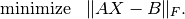
If
is less than or equal to , gels solves
the least-norm problem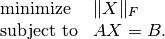
trans is 'T' or 'C' and A and B are real. If
is greater than or equal to ,
gels solves the least-norm problem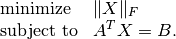
If
is less than or equal to , gels solves
the least-squares problem
trans is 'C' and A and B are complex. If
is greater than or equal to , gels solves
the least-norm problem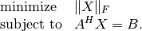
If
is less than or equal to , gels solves
the least-squares problem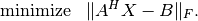
A and B must have the same typecode ('d' or 'z'). trans = 'T' is not allowed if A is complex. On exit, the solution is stored as the leading submatrix of B. The matrix A is overwritten with details of the QR or the LQ factorization of
.Note that gels does not check whether
is full rank.
The following functions compute QR and LQ factorizations.
- cvxopt.lapack.geqrf(A, tau)¶
QR factorization of a real or complex matrix A:
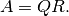
If
is by , then  is by
and orthogonal/unitary, and
is by
and orthogonal/unitary, and  is by
and upper triangular (if is greater than or equal
to ), or upper trapezoidal (if is less than or
equal to ).
is by
and upper triangular (if is greater than or equal
to ), or upper trapezoidal (if is less than or
equal to ).tau is a matrix of the same type as A and of length min{
, }. On exit, is stored in the upper
triangular/trapezoidal part of A. The matrix is stored
as a product of min{, } elementary reflectors in
the first min{, } columns of A and in tau.
- cvxopt.lapack.gelqf(A, tau)¶
LQ factorization of a real or complex matrix A:

If
is by , then is by
and orthogonal/unitary, and is by
and lower triangular (if is less than or equal to
), or lower trapezoidal (if is greater than or equal
to ).tau is a matrix of the same type as A and of length min{
, }. On exit, is stored in the lower
triangular/trapezoidal part of A. The matrix is stored
as a product of min{, } elementary reflectors in the
first min{, } rows of A and in tau.
- cvxopt.lapack.geqp3(A, jpvt, tau)¶
QR factorization with column pivoting of a real or complex matrix
:
If
is by , then is
by and orthogonal/unitary, and is by
and upper triangular (if is greater than or equal
to ), or upper trapezoidal (if is less than or equal
to ).tau is a matrix of the same type as A and of length min{
, }. jpvt is an integer matrix of
length . On entry, if jpvt[k] is nonzero, then
column  of is permuted to the front of
of is permuted to the front of  .
Otherwise, column is a free column.
.
Otherwise, column is a free column.On exit, jpvt contains the permutation
 : the operation
is equivalent to A[:, jpvt-1]. is stored
in the upper triangular/trapezoidal part of A. The matrix
is stored as a product of min{, }
elementary reflectors in the first min{,:math:n} columns
of A and in tau.
: the operation
is equivalent to A[:, jpvt-1]. is stored
in the upper triangular/trapezoidal part of A. The matrix
is stored as a product of min{, }
elementary reflectors in the first min{,:math:n} columns
of A and in tau.
In most applications, the matrix is not needed explicitly, and
it is sufficient to be able to make products with or its
transpose. The functions unmqr and
ormqr multiply a matrix
with the orthogonal matrix computed by
geqrf.
- cvxopt.lapack.unmqr(A, tau, C[, side = 'L', trans = 'N'])¶
Product with a real orthogonal or complex unitary matrix:

where
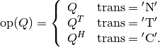
If A is
by , then is square of order
and orthogonal or unitary. is stored in the first
min{, } columns of A and in tau as a
product of min{, } elementary reflectors, as
computed by geqrf.
The matrices A, tau, and C
must have the same type. trans = 'T' is only allowed if
the typecode is 'd'.
- cvxopt.lapack.ormqr(A, tau, C[, side = 'L', trans = 'N'])¶
Identical to unmqr but works only for real matrices, and the possible values of trans are 'N' and 'T'.
As an example, we solve a least-squares problem by a direct call to gels, and by separate calls to geqrf, ormqr, and trtrs.
>>> from cvxopt import blas, lapack, matrix, normal
>>> m, n = 10, 5
>>> A, b = normal(m,n), normal(m,1)
>>> x1 = +b
>>> lapack.gels(+A, x1) # x1[:n] minimizes || A*x - b ||_2
>>> tau = matrix(0.0, (n,1))
>>> lapack.geqrf(A, tau) # A = [Q1, Q2] * [R1; 0]
>>> x2 = +b
>>> lapack.ormqr(A, tau, x2, trans='T') # x2 := [Q1, Q2]' * x2
>>> lapack.trtrs(A[:n,:], x2, uplo='U') # x2[:n] := R1^{-1} * x2[:n]
>>> blas.nrm2(x1[:n] - x2[:n])
3.0050798580569307e-16
The next two functions make products with the orthogonal matrix computed by gelqf.
- cvxopt.lapack.unmlq(A, tau, C[, side = 'L', trans = 'N'])¶
Product with a real orthogonal or complex unitary matrix:
where
If A is
by , then is square of order
and orthogonal or unitary. is stored in the first
min{, } rows of A and in tau as a product of
min{, } elementary reflectors, as computed by
gelqf.
The matrices A, tau, and C must have the
same type. trans = 'T' is only allowed if the typecode
is 'd'.
- cvxopt.lapack.ormlq(A, tau, C[, side = 'L', trans = 'N'])¶
Identical to unmlq but works only for real matrices, and the possible values of trans or 'N' and 'T'.
As an example, we solve a least-norm problem by a direct call to gels, and by separate calls to gelqf, ormlq, and trtrs.
>>> from cvxopt import blas, lapack, matrix, normal
>>> m, n = 5, 10
>>> A, b = normal(m,n), normal(m,1)
>>> x1 = matrix(0.0, (n,1))
>>> x1[:m] = b
>>> lapack.gels(+A, x1) # x1 minimizes ||x||_2 subject to A*x = b
>>> tau = matrix(0.0, (m,1))
>>> lapack.gelqf(A, tau) # A = [L1, 0] * [Q1; Q2]
>>> x2 = matrix(0.0, (n,1))
>>> x2[:m] = b # x2 = [b; 0]
>>> lapack.trtrs(A[:,:m], x2) # x2[:m] := L1^{-1} * x2[:m]
>>> lapack.ormlq(A, tau, x2, trans='T') # x2 := [Q1, Q2]' * x2
>>> blas.nrm2(x1 - x2)
0.0
Finally, if the matrix is needed explicitly, it can be generated
from the output of geqrf and
gelqf using one of the following functions.
- cvxopt.lapack.ungqr(A, tau)¶
If A has size
by , and tau has length
, then, on entry, the first k columns of the matrix A
and the entries of tau contai an unitary or orthogonal matrix
of order , as computed by
geqrf. On exit,
the first min{, } columns of are contained
in the leading columns of A.
- cvxopt.lapack.unglq(A, tau)¶
If A has size
by , and tau has length
, then, on entry, the first k rows of the matrix A
and the entries of tau contain a unitary or orthogonal matrix
of order , as computed by
gelqf.
On exit, the first min{, } rows of are
contained in the leading rows of A.
We illustrate this with the QR factorization of the matrix
![A = \left[\begin{array}{rrr}
6 & -5 & 4 \\ 6 & 3 & -4 \\ 19 & -2 & 7 \\ 6 & -10 & -5
\end{array} \right]
= \left[\begin{array}{cc}
Q_1 & Q_2 \end{array}\right]
\left[\begin{array}{c} R \\ 0 \end{array}\right].](_images/math/e355e8d282fa4ef5357c9a612727d3b43bc0ea82.png)
>>> from cvxopt import matrix, lapack
>>> A = matrix([ [6., 6., 19., 6.], [-5., 3., -2., -10.], [4., -4., 7., -5] ])
>>> m, n = A.size
>>> tau = matrix(0.0, (n,1))
>>> lapack.geqrf(A, tau)
>>> print(A[:n, :]) # Upper triangular part is R.
[-2.17e+01 5.08e+00 -4.76e+00]
[ 2.17e-01 -1.06e+01 -2.66e+00]
[ 6.87e-01 3.12e-01 -8.74e+00]
>>> Q1 = +A
>>> lapack.orgqr(Q1, tau)
>>> print(Q1)
[-2.77e-01 3.39e-01 -4.10e-01]
[-2.77e-01 -4.16e-01 7.35e-01]
[-8.77e-01 -2.32e-01 -2.53e-01]
[-2.77e-01 8.11e-01 4.76e-01]
>>> Q = matrix(0.0, (m,m))
>>> Q[:, :n] = A
>>> lapack.orgqr(Q, tau)
>>> print(Q) # Q = [ Q1, Q2]
[-2.77e-01 3.39e-01 -4.10e-01 -8.00e-01]
[-2.77e-01 -4.16e-01 7.35e-01 -4.58e-01]
[-8.77e-01 -2.32e-01 -2.53e-01 3.35e-01]
[-2.77e-01 8.11e-01 4.76e-01 1.96e-01]
The orthogonal matrix in the factorization
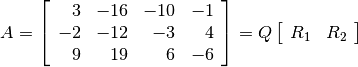
can be generated as follows.
>>> A = matrix([ [3., -2., 9.], [-16., -12., 19.], [-10., -3., 6.], [-1., 4., -6.] ])
>>> m, n = A.size
>>> tau = matrix(0.0, (m,1))
>>> lapack.geqrf(A, tau)
>>> R = +A
>>> print(R) # Upper trapezoidal part is [R1, R2].
[-9.70e+00 -1.52e+01 -3.09e+00 6.70e+00]
[-1.58e-01 2.30e+01 1.14e+01 -1.92e+00]
[ 7.09e-01 -5.57e-01 2.26e+00 2.09e+00]
>>> lapack.orgqr(A, tau)
>>> print(A[:, :m]) # Q is in the first m columns of A.
[-3.09e-01 -8.98e-01 -3.13e-01]
[ 2.06e-01 -3.85e-01 9.00e-01]
[-9.28e-01 2.14e-01 3.04e-01]
Symmetric and Hermitian Eigenvalue Decomposition¶
The first four routines compute all or selected eigenvalues and
eigenvectors of a real symmetric matrix :

- cvxopt.lapack.syev(A, W[, jobz = 'N', uplo = 'L'])¶
Eigenvalue decomposition of a real symmetric matrix of order
.W is a real matrix of length at least
. On exit, W
contains the eigenvalues in ascending order. If jobz is
'V', the eigenvectors are also computed and returned in A.
If jobz is 'N', the eigenvectors are not returned and the
contents of A are destroyed.Raises an ArithmeticError if the eigenvalue decomposition fails.
- cvxopt.lapack.syevd(A, W[, jobz = 'N', uplo = 'L'])¶
This is an alternative to syev, based on a different algorithm. It is faster on large problems, but also uses more memory.
- cvxopt.lapack.syevx(A, W[, jobz = 'N', range = 'A', uplo = 'L', vl = 0.0, vu = 0.0, il = 1, iu = 1, Z = None])¶
Computes selected eigenvalues and eigenvectors of a real symmetric matrix of order
.W is a real matrix of length at least
. On exit, W
contains the eigenvalues in ascending order. If range is
'A', all the eigenvalues are computed. If range is
'I', eigenvalues  through 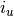 are
computed, where 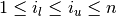. If range is
'V', the eigenvalues in the interval 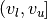 are
computed.
through 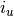 are
computed, where 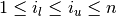. If range is
'V', the eigenvalues in the interval 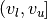 are
computed.If jobz is 'V', the (normalized) eigenvectors are computed, and returned in Z. If jobz is 'N', the eigenvectors are not computed. In both cases, the contents of A are destroyed on exit.
Z is optional (and not referenced) if jobz is 'N'. It is required if jobz is 'V' and must have at least
columns if range is 'A' or 'V' and at
least 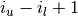 columns if range is 'I'.syevx returns the number of computed eigenvalues.
- cvxopt.lapack.syevr(A, W[, jobz = 'N', range = 'A', uplo = 'L', vl = 0.0, vu = 0.0, il = 1, iu = n, Z = None])¶
This is an alternative to syevx. syevr is the most recent LAPACK routine for symmetric eigenvalue problems, and expected to supersede the three other routines in future releases.
The next four routines can be used to compute eigenvalues and eigenvectors for complex Hermitian matrices:

For real symmetric matrices they are identical to the corresponding syev* routines.
- cvxopt.lapack.heev(A, W[, jobz = 'N', uplo = 'L'])¶
Eigenvalue decomposition of a real symmetric or complex Hermitian matrix of order
.The calling sequence is identical to syev, except that A can be real or complex.
- cvxopt.lapack.heevx(A, W[, jobz = 'N', range = 'A', uplo = 'L', vl = 0.0, vu = 0.0, il = 1, iu = n, Z = None])¶
Computes selected eigenvalues and eigenvectors of a real symmetric or complex Hermitian matrix.
The calling sequence is identical to syevx, except that A can be real or complex. Z must have the same type as A.
Generalized Symmetric Definite Eigenproblems¶
Three types of generalized eigenvalue problems can be solved:
(2)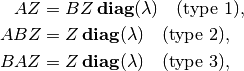
with and real symmetric or complex Hermitian, and
is positive definite. The matrix of eigenvectors is normalized
as follows:

- cvxopt.lapack.sygv(A, B, W[, itype = 1, jobz = 'N', uplo = 'L'])¶
Solves the generalized eigenproblem (2) for real symmetric matrices of order
, stored in real matrices A and B.
itype is an integer with possible values 1, 2, 3, and specifies
the type of eigenproblem. W is a real matrix of length at least
. On exit, it contains the eigenvalues in ascending order.
On exit, B contains the Cholesky factor of . If jobz
is 'V', the eigenvectors are computed and returned in A.
If jobz is 'N', the eigenvectors are not returned and the
contents of A are destroyed.
Singular Value Decomposition¶
- cvxopt.lapack.gesvd(A, S[, jobu = 'N', jobvt = 'N', U = None, Vt = None])¶
Singular value decomposition

of a real or complex
by matrix .S is a real matrix of length at least min{
, }.
On exit, its first min{, } elements are the
singular values in descending order.The argument jobu controls how many left singular vectors are computed. The possible values are 'N', 'A', 'S' and 'O'. If jobu is 'N', no left singular vectors are computed. If jobu is 'A', all left singular vectors are computed and returned as columns of U. If jobu is 'S', the first min{
, } left
singular vectors are computed and returned as columns of U.
If jobu is 'O', the first min{, } left
singular vectors are computed and returned as columns of A.
The argument U is None(if jobu is 'N'
or 'A') or a matrix of the same type as A.The argument jobvt controls how many right singular vectors are computed. The possible values are 'N', 'A', 'S' and 'O'. If jobvt is 'N', no right singular vectors are computed. If jobvt is 'A', all right singular vectors are computed and returned as rows of Vt. If jobvt is 'S', the first min{
, }
right singular vectors are computed and their (conjugate) transposes
are returned as rows of Vt. If jobvt is 'O', the
first min{, } right singular vectors are computed
and their (conjugate) transposes are returned as rows of A.
Note that the (conjugate) transposes of the right singular vectors
(i.e., the matrix 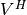) are returned in Vt or A.
The argument Vt can be None (if jobvt is 'N'
or 'A') or a matrix of the same type as A.On exit, the contents of A are destroyed.
- cvxopt.lapack.gesdd(A, S[, jobz = 'N', U = None, Vt = None])¶
Singular value decomposition of a real or complex
by
matrix.. This function is based on a divide-and-conquer
algorithm and is faster than gesvd.S is a real matrix of length at least min{
, }.
On exit, its first min{, } elements are the
singular values in descending order.The argument jobz controls how many singular vectors are computed. The possible values are 'N', 'A', 'S' and 'O'. If jobz is 'N', no singular vectors are computed. If jobz is 'A', all
left singular
vectors are computed and returned as columns of U and all
right singular vectors are computed and returned as rows of
Vt. If jobz is 'S', the first
min{, } left and right singular vectors are computed
and returned as columns of U and rows of Vt.
If jobz is 'O' and is greater than or equal
to , the first left singular vectors are returned as
columns of A and the right singular vectors are returned
as rows of Vt. If jobz is 'O' and is less
than , the left singular vectors are returned as
columns of U and the first right singular vectors are
returned as rows of A. Note that the (conjugate) transposes of
the right singular vectors are returned in Vt or A.The argument U can be None (if jobz is 'N' or 'A' of jobz is 'O' and
is greater
than or equal to ) or a matrix of the same type as A.
The argument Vt can be None(if jobz is 'N'
or 'A' or jobz is 'O' and :math`m` is less than
) or a matrix of the same type as A.On exit, the contents of A are destroyed.
Schur and Generalized Schur Factorization¶
- cvxopt.lapack.gees(A[, w = None, V = None, select = None])¶
Computes the Schur factorization

of a real or complex
by matrix .If
is real, the matrix of Schur vectors 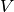 is
orthogonal, and  is a real upper quasi-triangular matrix with
1 by 1 or 2 by 2 diagonal blocks. The 2 by 2 blocks correspond to
complex conjugate pairs of eigenvalues of .
If is complex, the matrix of Schur vectors is
unitary, and is a complex upper triangular matrix with the
eigenvalues of on the diagonal.
is a real upper quasi-triangular matrix with
1 by 1 or 2 by 2 diagonal blocks. The 2 by 2 blocks correspond to
complex conjugate pairs of eigenvalues of .
If is complex, the matrix of Schur vectors is
unitary, and is a complex upper triangular matrix with the
eigenvalues of on the diagonal.The optional argument w is a complex matrix of length at least
. If it is provided, the eigenvalues of A are returned
in w. The optional argument V is an by
matrix of the same type as A. If it is provided, then the Schur
vectors are returned in V.The argument select is an optional ordering routine. It must be a Python function that can be called as f(s) with a complex argument s, and returns True or False. The eigenvalues for which select returns True will be selected to appear first along the diagonal. (In the real Schur factorization, if either one of a complex conjugate pair of eigenvalues is selected, then both are selected.)
On exit, A is replaced with the matrix
. The function
gees returns an integer equal to the number of eigenvalues
that were selected by the ordering routine. If select is
None, then gees returns 0.
As an example we compute the complex Schur form of the matrix
![A = \left[\begin{array}{rrrrr}
-7 & -11 & -6 & -4 & 11 \\
5 & -3 & 3 & -12 & 0 \\
11 & 11 & -5 & -14 & 9 \\
-4 & 8 & 0 & 8 & 6 \\
13 & -19 & -12 & -8 & 10
\end{array}\right].](_images/math/29dd6e523d1d84cf56aaffc9c949b4ecb8e10339.png)
>>> A = matrix([[-7., 5., 11., -4., 13.], [-11., -3., 11., 8., -19.], [-6., 3., -5., 0., -12.],
[-4., -12., -14., 8., -8.], [11., 0., 9., 6., 10.]])
>>> S = matrix(A, tc='z')
>>> w = matrix(0.0, (5,1), 'z')
>>> lapack.gees(S, w)
0
>>> print(S)
[ 5.67e+00+j1.69e+01 -2.13e+01+j2.85e+00 1.40e+00+j5.88e+00 -4.19e+00+j2.05e-01 3.19e+00-j1.01e+01]
[ 0.00e+00-j0.00e+00 5.67e+00-j1.69e+01 1.09e+01+j5.93e-01 -3.29e+00-j1.26e+00 -1.26e+01+j7.80e+00]
[ 0.00e+00-j0.00e+00 0.00e+00-j0.00e+00 1.27e+01+j3.43e-17 -6.83e+00+j2.18e+00 5.31e+00-j1.69e+00]
[ 0.00e+00-j0.00e+00 0.00e+00-j0.00e+00 0.00e+00-j0.00e+00 -1.31e+01-j0.00e+00 -2.60e-01-j0.00e+00]
[ 0.00e+00-j0.00e+00 0.00e+00-j0.00e+00 0.00e+00-j0.00e+00 0.00e+00-j0.00e+00 -7.86e+00-j0.00e+00]
>>> print(w)
[ 5.67e+00+j1.69e+01]
[ 5.67e+00-j1.69e+01]
[ 1.27e+01+j3.43e-17]
[-1.31e+01-j0.00e+00]
[-7.86e+00-j0.00e+00]
An ordered Schur factorization with the eigenvalues in the left half of the complex plane ordered first, can be computed as follows.
>>> S = matrix(A, tc='z')
>>> def F(x): return (x.real < 0.0)
...
>>> lapack.gees(S, w, select = F)
2
>>> print(S)
[-1.31e+01-j0.00e+00 -1.72e-01+j7.93e-02 -2.81e+00+j1.46e+00 3.79e+00-j2.67e-01 5.14e+00-j4.84e+00]
[ 0.00e+00-j0.00e+00 -7.86e+00-j0.00e+00 -1.43e+01+j8.31e+00 5.17e+00+j8.79e+00 2.35e+00-j7.86e-01]
[ 0.00e+00-j0.00e+00 0.00e+00-j0.00e+00 5.67e+00+j1.69e+01 -1.71e+01-j1.41e+01 1.83e+00-j4.63e+00]
[ 0.00e+00-j0.00e+00 0.00e+00-j0.00e+00 0.00e+00-j0.00e+00 5.67e+00-j1.69e+01 -8.75e+00+j2.88e+00]
[ 0.00e+00-j0.00e+00 0.00e+00-j0.00e+00 0.00e+00-j0.00e+00 0.00e+00-j0.00e+00 1.27e+01+j3.43e-17]
>>> print(w)
[-1.31e+01-j0.00e+00]
[-7.86e+00-j0.00e+00]
[ 5.67e+00+j1.69e+01]
[ 5.67e+00-j1.69e+01]
[ 1.27e+01+j3.43e-17]
- cvxopt.lapack.gges(A, B[, a = None, b = None, Vl = None, Vr = None, select = None])¶
Computes the generalized Schur factorization
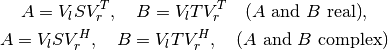
of a pair of real or complex
by matrices
, .If
and are real, then the matrices of left and
right Schur vectors  and 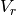 are orthogonal,
is a real upper quasi-triangular matrix with 1 by 1 or 2 by
2 diagonal blocks, and 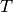 is a real triangular matrix with
nonnegative diagonal. The 2 by 2 blocks along the diagonal of
correspond to complex conjugate pairs of generalized
eigenvalues of , . If and are
complex, the matrices of left and right Schur vectors and
are unitary, is complex upper triangular, and
is complex upper triangular with nonnegative real diagonal.
and 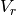 are orthogonal,
is a real upper quasi-triangular matrix with 1 by 1 or 2 by
2 diagonal blocks, and 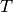 is a real triangular matrix with
nonnegative diagonal. The 2 by 2 blocks along the diagonal of
correspond to complex conjugate pairs of generalized
eigenvalues of , . If and are
complex, the matrices of left and right Schur vectors and
are unitary, is complex upper triangular, and
is complex upper triangular with nonnegative real diagonal.The optional arguments a and b are 'z' and 'd' matrices of length at least
. If these are
provided, the generalized eigenvalues of A, B are returned in
a and b. (The generalized eigenvalues are the ratios
a[k] / b[k].) The optional arguments Vl and Vr are
by matrices of the same type as A and B.
If they are provided, then the left Schur vectors are returned in
Vl and the right Schur vectors are returned in Vr.The argument select is an optional ordering routine. It must be a Python function that can be called as f(x,y) with a complex argument x and a real argument y, and returns True or False. The eigenvalues for which select returns True will be selected to appear first on the diagonal. (In the real Schur factorization, if either one of a complex conjugate pair of eigenvalues is selected, then both are selected.)
On exit, A is replaced with the matrix
and B is
replaced with the matrix . The function gges returns
an integer equal to the number of eigenvalues that were selected by
the ordering routine. If select is None, then
gges returns 0.
As an example, we compute the generalized complex Schur form of the
matrix of the previous example, and
![B = \left[\begin{array}{ccccc}
1 & 0 & 0 & 0 & 0 \\
0 & 1 & 0 & 0 & 0 \\
0 & 0 & 1 & 0 & 0 \\
0 & 0 & 0 & 1 & 0 \\
0 & 0 & 0 & 0 & 0
\end{array}\right].](_images/math/509aa8b7818d1bdc414b739659748e8d49bdab6f.png)
>>> A = matrix([[-7., 5., 11., -4., 13.], [-11., -3., 11., 8., -19.], [-6., 3., -5., 0., -12.],
[-4., -12., -14., 8., -8.], [11., 0., 9., 6., 10.]])
>>> B = matrix(0.0, (5,5))
>>> B[:19:6] = 1.0
>>> S = matrix(A, tc='z')
>>> T = matrix(B, tc='z')
>>> a = matrix(0.0, (5,1), 'z')
>>> b = matrix(0.0, (5,1))
>>> lapack.gges(S, T, a, b)
0
>>> print(S)
[ 6.64e+00-j8.87e+00 -7.81e+00-j7.53e+00 6.16e+00-j8.51e-01 1.18e+00+j9.17e+00 5.88e+00-j4.51e+00]
[ 0.00e+00-j0.00e+00 8.48e+00+j1.13e+01 -2.12e-01+j1.00e+01 5.68e+00+j2.40e+00 -2.47e+00+j9.38e+00]
[ 0.00e+00-j0.00e+00 0.00e+00-j0.00e+00 -1.39e+01-j0.00e+00 6.78e+00-j0.00e+00 1.09e+01-j0.00e+00]
[ 0.00e+00-j0.00e+00 0.00e+00-j0.00e+00 0.00e+00-j0.00e+00 -6.62e+00-j0.00e+00 -2.28e-01-j0.00e+00]
[ 0.00e+00-j0.00e+00 0.00e+00-j0.00e+00 0.00e+00-j0.00e+00 0.00e+00-j0.00e+00 -2.89e+01-j0.00e+00]
>>> print(T)
[ 6.46e-01-j0.00e+00 4.29e-01-j4.79e-02 2.02e-01-j3.71e-01 1.08e-01-j1.98e-01 -1.95e-01+j3.58e-01]
[ 0.00e+00-j0.00e+00 8.25e-01-j0.00e+00 -2.17e-01+j3.11e-01 -1.16e-01+j1.67e-01 2.10e-01-j3.01e-01]
[ 0.00e+00-j0.00e+00 0.00e+00-j0.00e+00 7.41e-01-j0.00e+00 -3.25e-01-j0.00e+00 5.87e-01-j0.00e+00]
[ 0.00e+00-j0.00e+00 0.00e+00-j0.00e+00 0.00e+00-j0.00e+00 8.75e-01-j0.00e+00 4.84e-01-j0.00e+00]
[ 0.00e+00-j0.00e+00 0.00e+00-j0.00e+00 0.00e+00-j0.00e+00 0.00e+00-j0.00e+00 0.00e+00-j0.00e+00]
>>> print(a)
[ 6.64e+00-j8.87e+00]
[ 8.48e+00+j1.13e+01]
[-1.39e+01-j0.00e+00]
[-6.62e+00-j0.00e+00]
[-2.89e+01-j0.00e+00]
>>> print(b)
[ 6.46e-01]
[ 8.25e-01]
[ 7.41e-01]
[ 8.75e-01]
[ 0.00e+00]
Example: Analytic Centering¶
The analytic centering problem is defined as
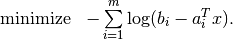
In the code below we solve the problem using Newton’s method. At each iteration the Newton direction is computed by solving a positive definite set of linear equations

(where has rows  ), and a suitable step size is
determined by a backtracking line search.
), and a suitable step size is
determined by a backtracking line search.
We use the level-3 BLAS function blas.syrk to form the Hessian matrix and the LAPACK function posv to solve the Newton system. The code can be further optimized by replacing the matrix-vector products with the level-2 BLAS function blas.gemv.
from cvxopt import matrix, log, mul, div, blas, lapack
from math import sqrt
def acent(A,b):
"""
Returns the analytic center of A*x <= b.
We assume that b > 0 and the feasible set is bounded.
"""
MAXITERS = 100
ALPHA = 0.01
BETA = 0.5
TOL = 1e-8
m, n = A.size
x = matrix(0.0, (n,1))
H = matrix(0.0, (n,n))
for iter in xrange(MAXITERS):
# Gradient is g = A^T * (1./(b-A*x)).
d = (b - A*x)**-1
g = A.T * d
# Hessian is H = A^T * diag(d)^2 * A.
Asc = mul( d[:,n*[0]], A )
blas.syrk(Asc, H, trans='T')
# Newton step is v = -H^-1 * g.
v = -g
lapack.posv(H, v)
# Terminate if Newton decrement is less than TOL.
lam = blas.dot(g, v)
if sqrt(-lam) < TOL: return x
# Backtracking line search.
y = mul(A*v, d)
step = 1.0
while 1-step*max(y) < 0: step *= BETA
while True:
if -sum(log(1-step*y)) < ALPHA*step*lam: break
step *= BETA
x += step*v